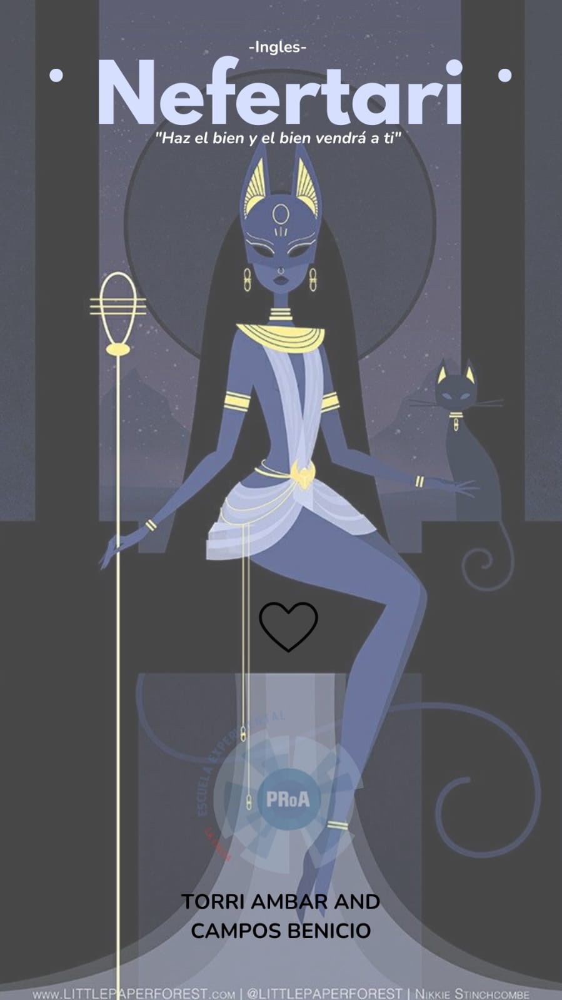
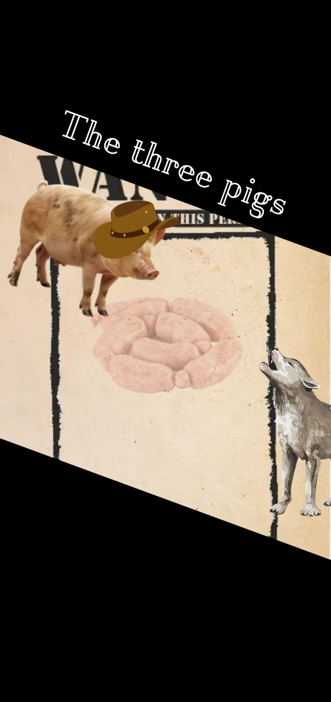
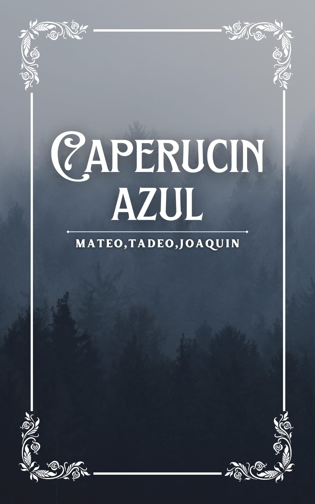
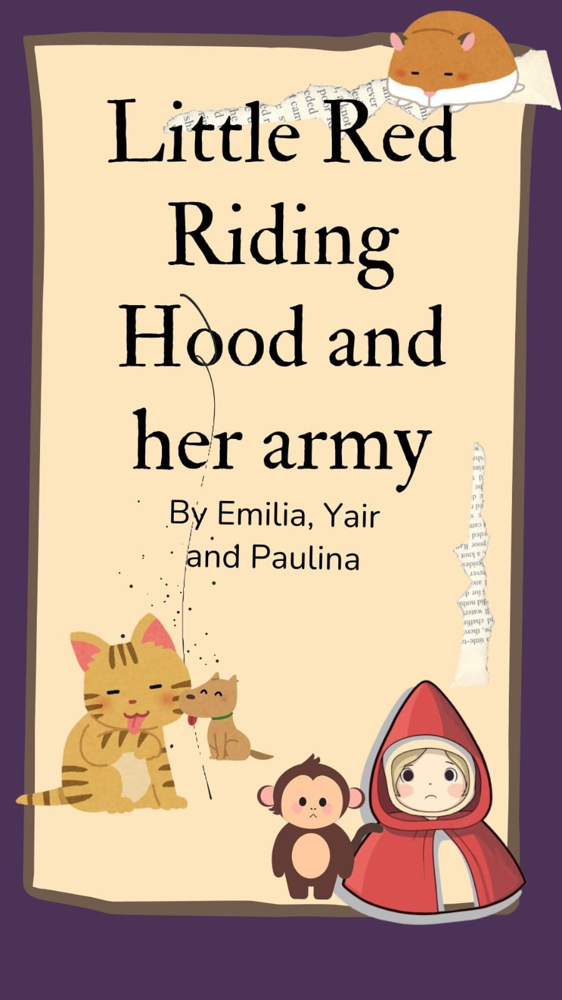

NEFERTARI
Writers: Torri Ambar
Una historia reversionada del reconocido mito egipcio de Nefertari.
 Leer JugarTHE TIN SOLDIER AND HIS GOLDEN PRINCE.
Writers: Pineda Melina, Fernandez Nicolas
Una historia reversionada del cuento El soldadito de Plomo.
 Leer
Jugar
Leer
Jugar
BLUE BEARD
Writers: Blazquez Ignacio, Ruizdiaz Ariel
Una historia reversionada de la historia de Barba Azul.
 Leer
Jugar
Leer
Jugar
NEYMAR THE PATH OF THE ICON
Writers: Juarez Benjamin, Martin Benjamin
THE THREE PIGS
Writers: Breininger Lautaro, Morillo Andres.
Una historia reversionada del famoso cuento Los Tres Chanchitos
 Leer JugarHANSEL AND GRETEL: THE CARAMEL WITCH
Writers: Mayr Constanza, Paz Jazmin, Castillo Brisa.
Una historia reversionada del famoso cuento Hansel y Gretel
 Leer
Jugar
Leer
Jugar
THE CUTE DUCKLING
Writers: Funes Julian, Funes Felipe.
Una historia reversionada del famoso cuento clasico El Patito Feo
 Leer
Jugar
Leer
Jugar
BLUE CAPERUCIN
Writers: Ortega Mateo, Cerutti Tadeo, Romero Joaquin.
Una historia reversionada del famoso cuento Caperucita Roja
 Leer JugarLITTLE RED RIDING HOOD'S COOKIES
Writers: Palacio Naiara, Belluscio Giovana.
Una historia reversionada del famoso cuento Caperucita Roja.
 Leer
Jugar
Leer
Jugar
LITTLE RED RIDING HOOD AND HER ARMY
Writers: Lozano Yair, Bukelatos Emilia, Ramos Paulina.
Una historia reversionada del famoso cuento Caperucita Roja.
 Leer Jugar